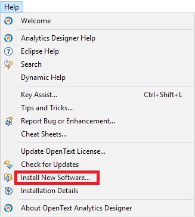
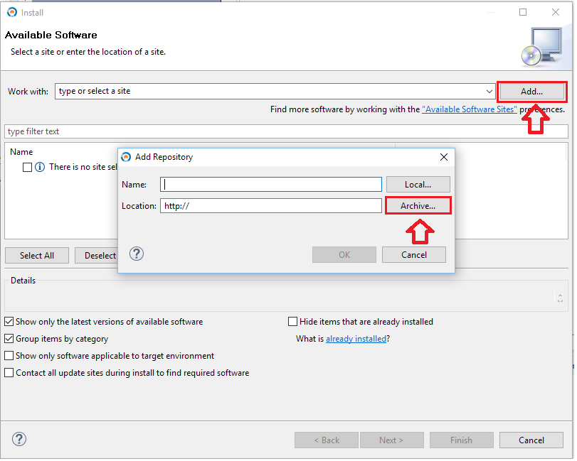
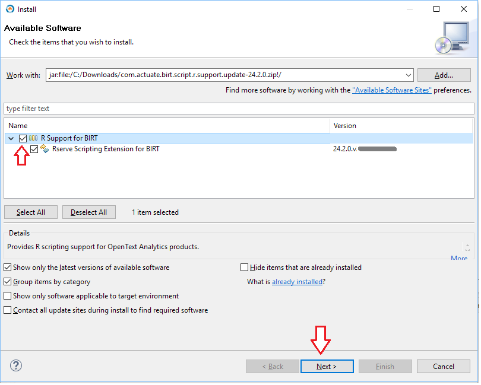
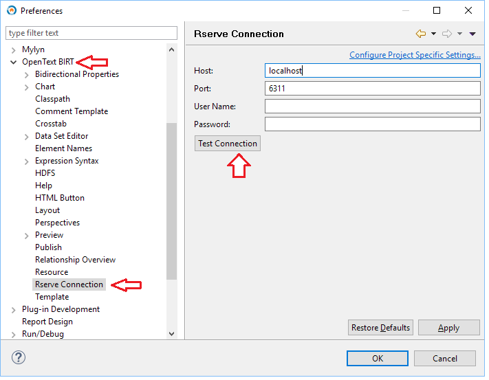

Offline Installation of R Support Feature for OpenText™ Analytics Products
- Download and Install R Support Feature for OpenText Analytics Designer® (Release 16.4)
- Download the R Support update site as a zip file: com.actuate.birt.script.r.support.update-24.2.0.zip
- Open Analytics Designer. Select menu "Help | Install New Software..."

- In the Available Software dialog, click on "Add..." next to "Works with" input. Then click on the "Archive..." button:

- Browse to the ZIP file that you have downloaded above and select it. Click on "OK" to close the "Add Repository" dialog.
- Back in the Available Software dialog, select "R Support for BIRT", the only category available, and choose "Next >"

- In the next few dialogs, review the installation details, read, and accept the licenses, then select "Finish" to complete the installation. You will be asked to restart Analytics Designer.
- After restarting Analytics Designer, the R Support feature should be enabled.
To test that this feature is working correctly, open menu "Window | Preferences", the browse to "OpenText BIRT" / "Rserve Connection".
Enter the connection information to a running Rserve instance, and click on "Test Connection" to make sure that Analytics Designer is able to connect to R.

- Download and Install R Support Feature for Information Hub® (Release 16.4)
- Download the plugin com.actuate.birt.script.ext.rserve.
Save the jar file locally. The file name should be in the form com.actuate.birt.script.ext.rserve_24.2.0.vnnnnnnnnnnnn.jar.
- On each iHub node, copy the downloaded jar file to directory "modules/BIRTiHub/iHub/web/birtservice/WEB-INF/platform/plugins" under iHub home.
- From iHub System Console, shut down then restart the iHub cluster. Alternatively, you may shut down and restart each iHub node from the command line or Windows Service Manager.
- After iHub is restarted, you should log on to iHub System Console to configure R connectivity. For details see the Information Hub Installation, Configuration,
and Administration Guide, available on http://mysupport.opentext.com.